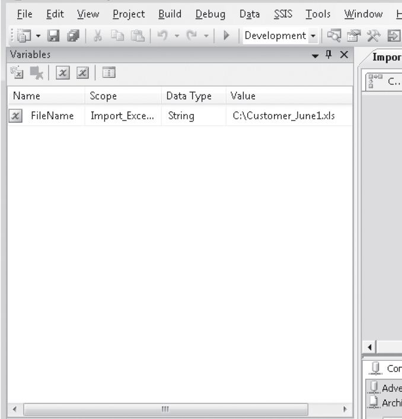
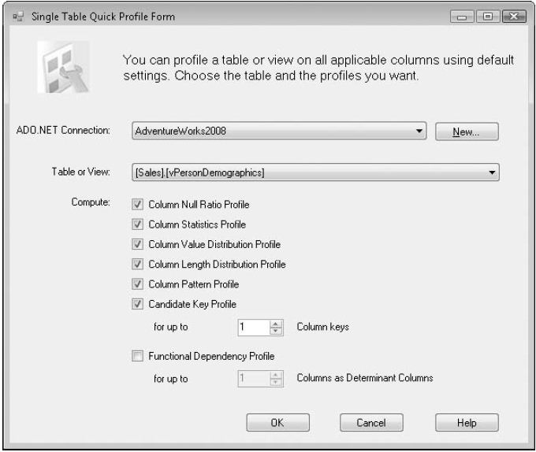
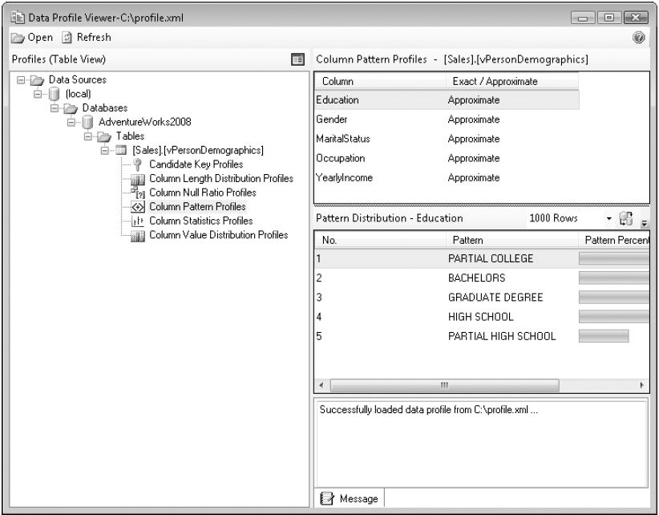

SSIS Package Variables, Script and Profiling
SSIS Package Variables, Script and Profiling
Variables in SSIS are used to integrate objects by passing values between tasks and containers, accepting values from external sources, or building code dynamically that is then executed. Variables are also used for auditing and logging.
All SSIS variables are given a name, scope, data type, and value. The scope defines at what level within a package the variable is created. For example, when a Foreach Loop Container is selected and then Add Variable button is clicked on the toolbar for the Variables window, the variable is scoped at that level.
When no tasks or containers are selected, the variable is scoped at the entire package level. Also, the Variables window lets you add, delete, or modify variables in a package.

variables are referenced as User::[VariableName] or System::[VariableName].
System variables are not editable but can be referenced within tasks and containers. System variables are set by the package for tracking metadata such as the package name and the user that executes the package.
To view all system variables, click Show System Variables (the button labeled with an X) on the Variables window toolbar.
User variables can be created and defined by developer for any purpose in the package.
Do take a good note here of Script Task and Data Profiling Task now; because it is specially mentioned in the Self Paced training kit of Microsoft Exam 70-448.
Script Task is used in SSIS to execute VB.NET or C#.NET code. The Script Task has the following features:
- Uses the Visual Studio Tools for Applications 2.0 (VSTA) interface, which lets you run VB.NET and C#.NET code with the full host of methods and functions.
- Variables can be referenced and updated within a script.
- Connections can be referenced and updated within a script.
- SSIS breakpoints can be applied within the script’s code (for the Script Task).
- Runs in both a 32-bit environment (X86) and a 64-bit environment (X64).
To access SSIS variables in a Script Task, the variables has to be include in the Readonlyvariables or ReadWritevariables list, as need be.
Data Profiling Task is used to review source data entities, to check the cleanliness and completeness of the data, and to understand how the data is organized structurally, such as possible key columns and relationships between columns.
The Data Profiling Task has two parts: the Data Profiling Task in the control flow that performs the analysis and the Data Profile Viewer to review the results.
To use the Data Profiling Task, first create an ADO.NET connection where the source tables or views reside. The Data Profiling Task requires an ADO.NET connection for sources. Next, drag the task from the toolbox onto the control flow, and then open the task to edit its properties. An easy way to perform a data profile is to click the Quick Profile button in the Data Profiling Task Editor.
Single Table Quick Profile Form dialog box configured to run against the [Sales].[vPersonDemographics] view.
Data Profiling Task can analyze data in various ways
Column Null Ratio Profile Evaluates the column and returns the percent of NULLs in the column relative to the total number of rows in the table
Column Statistics Profile returns the spread and averages of the values for numeric and datetime columns
Column Value Distribution Profile Identifies the uniqueness of the values in a column across all the rows for that column
Column Length Distribution Profile Shows the various value lengths for a text column and the percentage of all the rows that each length takes up
Column Pattern Profile Displays any patterns found in the column data and returns the regular expression pattern that matches the pattern
Candidate Key Profile Identifies one or more columns that are unique across all the rows; the percentage of uniqueness is shown
Functional Dependency Profile Lists any columns that have value dependencies on other columns within the table, where a value from one column is found only when the value of another column is distinct

After you configure the Data Profiling Task through the Single Table Quick Profile Form dialog box, you need to specify the output XML file in the Destination property. This is where the task stores the profiling results.
To view the results, open the Data Profile Viewer. (Click Start and then select All Programs, Microsoft SQL Server 2008R2, Integration Services, Data Profile Viewer.) Click Open on the toolbar, and browse to the output XML file where the results are stored.

A package can be executed in the BIDS in three ways
- Choose Start Debugging from the Debug menu on the menu bar
- Click Start Debugging (the button containing an arrow that resembles the Play button on a DVD player) on the Standard toolbar
- Press F5 on your keyboard
After a package is run in BIDS, a new tab named the Progress tab appears in the SSIS Designer. This tab shows the execution results and allows to troubleshoot any package errors that might be found. The Progress tab is renamed as Execution Results when in design view.
{kind=link}
{kind=link}
{kind=link}